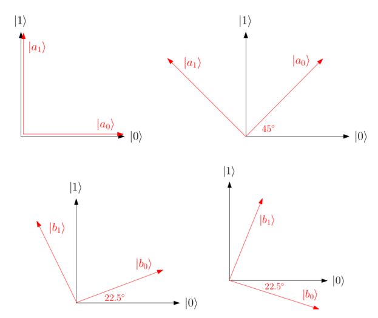

Ch2-Lecture 6¶
Non-Local Games¶
We have discussed measurements and entanglement, now let’s combine these two topics to discuss one of the most fundamental questions in quantum theory: Does entanglement as we understand it actually exist in Nature? Recall that in 1935, Einstein, Podolsky and Rosen (EPR) argued that quantum mechanics could not be a complete physical theory due to its prediction of states such as the Bell state \( \left|\Phi^+\right\rangle = \frac{1}{\sqrt{2}} \left( \left|00\right\rangle + \left|11\right\rangle \right) \). For example, as we will discuss shortly, the Bell state appears to allow superluminal (i.e. faster than the speed of light) communication, which is impossible by the theory of relativity. Thus, EPR suggested that there must be more to Nature than what quantum theory prescribes — namely, that there must be “ hidden variables” which contain extra information missing in quantum mechanics about what is actually happening in the subatomic world. In other words, the moon is there even if you do not look at it — it’s just that we “do not have access” to the hidden variables prescribing the state of the moon. Moreover, this information must be “local”, in the sense that instantaneous communication between variables should not be possible. Such theories arehence called local hidden variable theories.
Remarkably, in 1964, John Bell proved that no local hidden variable theory could ever reproduce the statistics predicted by quantum mechanics! Thus, either local hidden variables theories are wrong, or quantum mechanics is wrong. In fact, Bell went a step further — he proposed a “simple” experiment which could be run in a lab to test which of these two cases represents reality. This experiment was based on (what is now called) a Bell inequality, and was run for example by the celebrated effort of Aspect, Grangier, and Roger in 1981, who wrote about their findings:
Our results, in excellent agreement with the quantum mechanical predictions, strongly violate the generalized Bell’s inequalities, and rule out the whole class of realistic local theories
Aspect, Grangier, Roger, PRL 1981.
Thus, quantum mechanics, and not a local hidden variable theory, appears to be correct, and Bell states as we understand them really do exist. It should be mentioned that these experiments are not iron-clad results — it turns out there are conceivable “loopholes” in such experimental setups which could explain the outcomes of such experiments without ruling out local hidden variable theories. Nevertheless, over the years improved experimental setups have managed to close some of these “loopholes”, and it is probably fair to say that the general physics community regards this at least as strong evidence that local hidden variable theories are insufficient to model the subatomic world.
The equivalent of Bell inequalities in computer science is called non-local games. In the process, we will further practice working with measurements, and see another instance of how the non-local nature of entanglement can be harnessed in a computational task to perform a classically impossible feat.
Does entanglement allow superluminal signalling?¶
Before discussing what entanglement can do, however, let us take a detour to point out what entanglement cannot do. Consider the Bell state \( \left|\Phi^+\right\rangle = \frac{1}{\sqrt{2}} \left( \left|00\right\rangle + \left|11\right\rangle \right) \). Suppose you take the first qubit of \( \left|\Phi^+\right\rangle \) and run off to Pluto, and your friend Bob keeps the second qubit here on Earth. If you now measure your qubit in the standard basis \( \left\{ \left|0\right\rangle , \left|1\right\rangle \right\} \), you will obtain outcome \( \left|i\right\rangle \) with probability
Moreover, having obtained outcome \( \left|i\right\rangle \), you know Bob’s qubit on Earth has instantly collapsed to state \( \left|i\right\rangle \) as well, since your joint postmeasurement state (according to your state of knowledge, not Bob’s!) is given by (the normalized version of)
Does this mean you have managed to instantly communicate the value of i to Bob? This would be a big no-no according to the theory of relativity!
To resolve this paradox, we employ the density operator framework. First, observe that Bob’s state of knowledge before your measurement is given by the reduced density matrix of his qubit, which recall from last class satisfies
In other words, Bob’s qubit contains no information by itself. Now let us compute Bob’s reduced state after you’ve performed your measurement (assuming you have not communicated your result to Bob by some classical means such as via satellite phone). Since with probability 1/2, you obtain measurement outcome \( \left|i\right\rangle \), resulting in joint state \( \left|ii\right\rangle \), the density operator describing your joint post-measurement state is
If we now check Bob’s reduced state, we find that again
Thus, Bob has learned nothing about the outcome of your measurement! In other words, although Bob’s state indeed changes instantly once you measure your qubit (i.e. a collapse occurs), he has no way of knowing it until classical information encoding the measurement outcome is sent from Pluto to Earth. Thus, no information is instantly transmitted.
Non-local games¶
As we just saw measuring half of a Bell state does not allow one to communicate information from Alice to Bob. Surprisingly, though, the story has only just begun — one can nevertheless use local measurements on both halves of a Bell state to generate a probability distribution which contains correlations stronger than those possible classically. It is precisely this principle which is harnessed in non-local games. The setup of a non-local game is as follows. Suppose you and a friend are charged with doing too much homework on school property, and taken to police headquarters, where you are separated into two different rooms (i.e. you cannot communicate with one another). An interrogator takes turns asking each of you a question, and subsequently compares and cross-checks your answers to verify that you are both telling the truth. It turns out that if you and your friend happened to share two halves of a Bell state before being taken to the police station, then by performing appropriate local measurement on your qubits based on the interrogator’s questions, you can sometimes convince the interrogator of your honesty with higher probability than you could hope to do so without the use of entanglement. Let us demonstrate this via the concrete example of the CHSH game.
The CHSH game¶
In 1969, Clauser-Horne-Shimony-Holt gave an important variant of Bell’s inequality, nowadays named after its authors as the CHSH inequality. It turns out that this inequality can be recast as a non-local game, called the CHSH game. To specify this game, let us denote the two spatially separated players as Alice and Bob, each of which receives a single question consisting of a single bit, \(q_A \in \left\{0,1\right\} \) for Alice and \(q_B \in \left\{0,1\right\} \) for Bob. The questions are chosen uniformly at random. Alice and Bob now output a response consisting of a single bit each, \(r_A \in \left\{0,1\right\} \) for Alice and \(r_B \in \left\{0,1\right\} \) for Bob. We say they win if \(q_A \land q_B = r_A \oplus r_B\) , where \(\land\) denotes the AND function and \(\oplus\) denotes XOR (recall XOR on two bits \(b_1,b_2 \in \left\{0,1\right\} \) equals one if and only if precisely one of \(b_1\) and \(b_2\) is set to 1). In words, this says the following: If the questions are \(q_Aq_B \in \left\{00, 01, 10\right\} \), then Alice and Bob should answer with the same bit. Only if the questions are \(q_Aq_B \in \left\{11\right\} \) should they answer with different bits.
Limits on classical strategies¶
Let us convince ourselves that any deterministic classical strategy for this game can win with probability at most 3/4. Specifically, any deterministic strategy for Alice (similarly for Bob) falls into one of four cases, specifying what Alice does when she receives her question, \(q_A\) : Output the same bit as \(q_A\) , output the opposite of \(q_A\) , ignore \(q_A\) and always output 0, or ignore \(q_A\) and always output 1. Let us consider one such strategy; the analysis of all other cases follows analogously. Suppose Alice and Bob always ignore their questions \(q_A\) and \(q_B\) and output \(r_A = r_B = 0\). What is the probability of this strategy to win? Since \(r_A = r_B = 0\), we have \(r_A \oplus r_B = 0\), meaning they win whenever \(q_A \land q_B = 0\). This happens so long as \(q_Aq_B \in \left\{00, 01, 10\right\} \), i.e. for 3 of the 4 possible pairs of questions they can receive. Since the questions are chosen uniformly at random, they win with probability 3/4, as claimed.
Finally, you may wonder whether Alice and Bob can classically do better if they use a randomized strategy for selecting answers. It turns out the answer is no, as a randomized strategy may be viewed as an average over all deterministic strategies. Thus, they might as well choose the optimal deterministic strategy.
A quantum strategy¶
We now show that if Alice and Bob share the Bell pair \( \left|\Phi^+\right\rangle \) before the game starts, then by performing appropriate local measurements based their questions \(q_A\) and \(q_B\) , they can win the game with a higher probability of \(\cos^2(\pi/8)\approx0.854\) (compared to 3/4 in the classical case). This is equivalent to saying the original CHSH inequality is violated by quantum mechanics, meaning a local hidden variable theory cannot explain the measurement statistics predicted by quantum mechanics (though we will not discuss these details here). To model Alice and Bob’s strategy, we introduce the concept of an observable.
- Observables
Recall that a projective measurement is given by a set of projectors \(M= \left\{\Pi_i \right\} \) such that \( \sum_{i=1}\Pi_i=I\). To each outcome we associate some label, \(i \in S \subset \mathbb{R} \) for some set \(S\) such as \(S = \{1, . . . , d\}\). An observable is simply the matrix
For example, consider a measurement in the standard basis \( \left\{ \left|0\right\rangle , \left|1\right\rangle \right\} \), where the outcomes are labelled with set \(S = \{1, −1\}\), respectively. Then, the corresponding observable is (for Pauli operator \(Z\))
Send it after class 1¶
Consider measurement \(M = \left\{ \left| + \right\rangle\!\left\langle + \right| , \left| - \right\rangle\!\left\langle - \right| \right\} \) with outcome labels \(S = \{1, −1\}\). What is the corresponding observable?
Observables are useful in that they allow us to quickly calculate the expected value of a measurement. Recall that for a random variable \(X\) distributed over set \(Y\) , the expected value of \(X\) is defined
and captures what value \(X\) takes on average. Similarly, the outcome of a measurement \(M= \left\{\Pi_i \right\}\) can be modelled by a random variable \(X\) over possible outcome labels \(i \in S\), and we can ask what \(E[X]\) is. For a measurement on density operator \( \rho \), this is given by the formula
for observable \(C= \sum_{i\in S} i.\Pi_i\) , and where the third equality follows by linearity of the trace.
Send it after class 2¶
Suppose we measure in the standard basis \( \left\{ \left|0\right\rangle , \left|1\right\rangle \right\} \subseteq \mathbb{C} ^2 \) with corresponding measurement labels \(\{1, −1\}\), respectively. Convince yourself that the corresponding observable is Pauli \(Z\). What is the expected value of measuring density operator \( \rho = \frac{2}{3} \left| 0 \right\rangle\!\left\langle 0 \right| + \frac{1}{3} \left| 1 \right\rangle\!\left\langle 1 \right| \) with observable \(Z\)?
Alice and Bob’s strategy. With observables in hand, we state Alice’s and Bob’s strategy. First, let us change the encoding of their output bits. Namely, instead of outputting \(r_A,r_B \in \left\{0,1\right\} \), in their measurements Alice and Bob use label 1 to mean output 0, and label −1 to mean output bit 1. Then, conditioned on questions \(q_A\) and \(q_B\) , Alice and Bob use observables \(A_{q_A}\) and \(B_{q_B}\) as follows:
Note that all four of these observables have eigenvalues in set \(S = \{1, −1\}\), and so they can be thought of as measurements in their respective eigenbases with outcomes labelled by \(S\).
Calculating the success probability. At first glance, it is likely unclear why such a strategy should be interesting at all. Let us first calculate the success probability of this strategy to demonstrate that it does work, and subsequently give an intuitive understanding of why it works.
First, we claim that for arbitrary observables with spectral decompositions \(A= \left| a_0 \right\rangle\!\left\langle a_0 \right| - \left| a_1 \right\rangle\!\left\langle a_1 \right| \) and \(B= \left| b_0 \right\rangle\!\left\langle b_0 \right| - \left| b_1 \right\rangle\!\left\langle b_1 \right| \) the quantity \( \text{Tr}\left(A \otimes B\left| \Phi^+ \right\rangle\!\left\langle \Phi^+ \right| \right) \) encodes the probability that Alice and Bob output the same bits minus the probability they output different bits, assuming they measure using \(A\) and \(B\). To see this, we have
We conclude that for pairs of questions \(q_Aq_B \in \left\{00, 01, 10\right\} \) (i.e. Alice and Bob should output the same bit), the term \(\text{Tr}\left(A \otimes B \left| \Phi^+ \right\rangle\!\left\langle \Phi^+ \right|\right)\) denotes the probability Alice and Bob win minus the probability they lose. Similarly, for the question pair \(q_Aq_B = 11 \) (i.e. their answers should disagree) the analogous quantity is \(-\text{Tr}\left(A \otimes B \left| \Phi^+ \right\rangle\!\left\langle \Phi^+ \right|\right)\). It follows that that the probability that Alice and Bob win minus the probability they lose is given by
where the factor of \(1/4\) appears because each question pair \(q_Aq_B\) appears with probability \(1/4\). A direct calculation now yields that for our choices of \(A_i\) and \(B_i\) ,
whereas \(\text{Tr}\left(A_1 \otimes B_1 \left| \Phi^+ \right\rangle\!\left\langle \Phi^+ \right|\right)=- \frac{1}{\sqrt{2}} \).
Let \(p\) be the probability with which Alice and Bob win with this strategy. The probability of winning minus losing, \(p − (1 − p) = 2p − 1\), equals \( \sfrac{1}{\sqrt{2}} \). Hence, \(p = 1/2 + 1/(2\sqrt{2}) = \cos^2 (\pi/8) \approx 0.854\), which is strictly better than the optimal classical winning probability of 0.75, as claimed.

Measurement bases for \(A_0\) (top-left), \(A_1\) (top-right), \(B_0\) (bottom-left), \(B_1\) (bottom- right).
Intuition behind Alice and Bob’s strategy. Why does this strategy work? To see this, we plot the eigenbases for each observable used (i.e. the measurement bases). Each eigenvector is denoted \( \left|a_0\right\rangle \) or \( \left|a_1\right\rangle \) for Alice (\( \left|b_0\right\rangle \) or \( \left|b_1\right\rangle \) for Bob), corresponding to Alice outputting \(0\) or \(1\), respectively. To begin, intuitively, the Bell state has the special property that if Alice and Bob measure in “similar” bases on their respective qubits, then they should get the same outcome with high probability, whereas if they measure with “very different” bases, then they will get opposite outcomes with high probability. In other words, we want to choose observables \(A_0\) , \(A_1\) , \(B_0\) , and \(B_1\) such that for questions \(q_Aq_B \in \left\{00,01,10\right\} \), Alice and Bob measure in bases which are “close” (since their output bits should match), and for \(q_Aq_B=11\), they measure in bases which are “far apart” (since their outputs should differ). Figure depicts exactly this scenario. For example, for \(q_Aq_B = 00\), the plots depicting Alice and Bob’s measurement bases are the top-left and bottom-left, respectively. Here we see that \( \left|a_0\right\rangle \) for Alice has high overlap with \( \left|b_0\right\rangle \) for Bob (similarly for \( \left|a_1\right\rangle \) and \( \left|b_1\right\rangle \)), so they are likely to obtain the same outcome. Conversely, for \(q_A q_B = 11\) (i.e. top-right and bottom-right plots), \( \left|a_0\right\rangle \) and \( \left|b_0\right\rangle \) i are almost orthogonal (similarly for \( \left|a_1\right\rangle \)), meaning it is unlikely that Alice and Bob’s outputs will agree.
The magic square game¶
In the previous, we studied the CHSH game, whose maximum classical winning probability is \(3/4\), whereas a quantum strategy based on entanglement achieves probability \(0.854\). Let us see if this separation can be made stronger — does there exist a non-local game with classical winning probability strictly smaller than 1, but can be won perfectly quantumly? It turns out the answer is yes; an example demonstrating this phenomenon is the magic square of Mermin and Peres from the early 1990’s. The magic square works as follows: Suppose we have a \(3\times3\) array, labelled with variables \(x_{ij}\) :
The goal is to assign \(0\) or \(1\) to each variable \(x_{ij}\) so that in each row and in the first two columns, the number of 1’s is even (i.e. they have parity 0). In the last column, the requirement is that the number of 1’s is odd (i.e. they have parity 1). Formally, we can express this as the system of equations
where \( \oplus \) denotes the XOR, i.e. addition modulo 2. It turns out that it is impossible to fill out this square so that all six of these equations are satisfied.
Send it after class 3¶
Show that there do not exist assignments to all \(x_{ij} \in \{0, 1\}\) satisfying all six equations above. (Hint: Add all the equations to achieve a contradiction.)
Making a game of the magic square. We can turn the magic square into a non-local game between parties Alice and Bob as follows. As her question, Alice receives uniformly at random one of the rows or columns of the square, where we index the rows and columns by \(q_A \in \{1, 2, 3, 4, 5, 6\}\). Suppose row/column \(q_A\) contains variables \(x, y, z\). Then, Alice must return assignments for \(x\),\(y\), and \(z\) — denote her answers \(x_A\) , \(y_A\) , \(z_A\) . As for Bob’s question, we now choose uniformly one of \(x, y, z\), and ask Bob to provide an assignment for it. For example, Bob might be asked to provide an assignment for \(y\), which we would denote \(y_B\) . We say Alice and Bob win the game if \(x_A\) , \(y_A\) , \(z_A\) satisfies the parity constraint for the corresponding row or column, and if Bob’s answer matches that of Alice (i.e. \(y_B = y_A\) in our example).
Send it after class 4¶
Suppose Alice is asked to provide an assignment for row 1, i.e. \(x_{11} , \)x_{12}\( , \)x_{13}\( , and Bob is asked to provide an assignment for \)x_{13}$ . What response of Alice and Bob can win the game? What response will lose the game?
Because the magic square cannot be filled out perfectly, it is not difficult to argue that no classical strategy of Alice and Bob can win this non-local game with probability 1. There is, however, a perfect quantum strategy, and as for the CHSH game, it relies on the non-local nature of entanglement.
A perfect quantum strategy. As for the CHSH game, we begin by switching from basis \(\{0, 1\}\) for encoding responses to \(\{1, −1\}\), respectively. (As a result, our observables will have eigevalues in \(\{1, −1\}\).) Note that this translates an expression of the form \(x \oplus y \oplus z = b\) for \(x, y, z, b \in \{0, 1\}\) to \(xyz = (−1)^b\) for \(x, y, z \in \{1, −1\}\), i.e. the direct sum condition converts to a multiplication. For example, with this “change of basis”, \(0 \oplus 1 \oplus 0 = 1\) converts to \((1)(−1)(1) = (−1)^1\) . Also as for CHSH, before the game starts, Alice and Bob share an entangled state between them; in this case, we use a higher dimensional analogue of the Bell state,
where recall \(\{ \left|0\right\rangle , \left|1\right\rangle , \left|2\right\rangle, \left|3\right\rangle \}\) is an orthonormal basis for \( \mathbb{C}^4\) . Now recall Alice will receive three cells \(x\), \(y\), \(z\) in the magic square (from a single row or column) for which she has to provide values in \(\{1, −1\}\), and Bob will receive one of \(x\), \(y\), or \(z\), for which he must provide a value in \(\{1, −1\}\). The following chart shows which measurement Alice or Bob should apply to their half of \( \left|\psi\right\rangle \) depending on which cell(s) they receive questions for:
For example, if Alice receives row 1 as her question, she measures observables \(Z \otimes I \), \(I \otimes Z\), and \(Z \otimes Z\) on her half of \( \left|\psi\right\rangle \). Then, if Bob receives the top middle cell as his question, he measures \(I \otimes Z \) on his half of \( \left|\psi\right\rangle \). Since all observables above have eigenvalues in \(\{1, −1\}\), all of Alice and Bob’s responses will also be in \(\{1, −1\}\).
Why does this work? Suppose Alice gets the first row as a question. Then, she measures according to \(Z \otimes I \), \(I \otimes Z\), and \(Z \otimes Z\), obtaining 3 values from set \(\{1, −1\}\), each of which corresponds to one of the cells in row 1. The expected value for the product of these (since recall switching to the \(\{1, −1\}\) output encoding converted our constraints to multiplication of variables) is given by
In other words, Alice always outputs a triple from set \(\{1, −1\}^{\times3}\) with product 1 when she is asked row 1, and hence answers her question correctly. (Aside: Note that each operator above, e.g. \(Z \otimes I\), acts entirely on Alice’s 4-dimensional half of \( \left|\psi\right\rangle \).) More generally, multiplying out the observables in any row and in the first two columns similarly yields the matrix \(I \otimes I\) — this means Alice always outputs values with product 1 in these cases, as desired. As for the last column, the observables multiply out to \(−I \otimes I\), meaning Alice outputs values with product \(−1\), again as desired.
Send it after class 5¶
Show that multiplying the observables in column 3 above yield \(-I \otimes I\).
How about Bob — will his measurement result match Alice’s? Note that by definition, Alice and Bob both perform the same measurement for a given cell on their respective halves of \( \left|\psi\right\rangle \). For example, if Alice is asked row 1 and Bob is asked the top-middle cell, then both of them measure \(I \otimes Z\) on their respective halves of \( \left|\psi\right\rangle \). Here, we use a nice fact:
- Fact:
For \( \left|\psi\right\rangle = \frac{1}{\sqrt{d}} \sum_{i=1}^{d} \left|ii\right\rangle \) and any observable \(A\), we have \(A ⊗ I \left|\psi\right\rangle = I \otimes A^T \left|\psi\right\rangle \).
Using this fact, the expected value for the product of Alice and Bob’s measurements for the top-middle cell is
since \(Z^2 = I\). In other words, their outputs always agree. A similar analysis applies for any of the nine cells in the magic square. We conclude that Alice and Bob win the magic square game with certainty.
Finally, we mention an important point, but one which we will not dwell on at this point in the course. Recall that in general, measuring a quantum state disturbs it, and so the order in which a sequence of measurements is performed is important. There is an exception to this rule, though — if the observables corresponding to the measurements all commute, then the order in which the measurements are performed does not matter. In the strategy above, any pair of observables in the table pairwise commute - thus, e.g., when Alice does three measurements in a row on her half of \( \left|\psi\right\rangle \), the precise order of the measurements does not matter. This ensures the strategies above are well-defined.
Connections to solving systems of equations. Recall the magic square corresponds to the following inconsistent system of equations (where each \(x_{ij} \in \{1, −1\}\)):
The reason why the magic square game has a perfect quantum strategy is intuitively that if we allow higher dimensional assignments, then the analogous system does have a solution! Formally, let us work in \( \mathcal{L} \left( \mathbb{C}^4\right) \), obtaining system $\( \begin{table} \resizebox{\textwidth}{!}{% \begin{tabular}{ll} M_{11} M_{12} M_{13} =I & M_{11} M_{21} M_{31} =I \\ M_{21} M_{22} M_{23} =I & M_{12} M_{22} M_{32} =I \\ M_{31} M_{32} M_{33} =I & M_{13} M_{23} M_{33} =-I \end{tabular}% } \end{table} \)$
where \(M_{ij} \in \mathcal{L} \left( \mathbb{C}^4\right)\) ) and I is the \(4\times4\) identity matrix.
Send it after class 6¶
Let \(M_{ij}\) be given by the observable in row \(i\) and column \(j\) in the measurement table. Show that this choice of assignment satisfies the system in equations above.
It follows immediately from the exercise above that regardless of which state \( \left|\psi\right\rangle \) Alice and Bob share, Alice will always output a correct answer. The only reason we now require \( \left|\psi\right\rangle \) to specifically be a high dimensional analogue of the Bell state is to apply \(A ⊗ I \left|\psi\right\rangle = I \otimes A^T \left|\psi\right\rangle \), which allows Bob’s condition to always be satisfied. Thus, at the heart of the magic square game is the idea that even if a system of equations has no solution over a low dimensional space, its high dimensional analogue may nevertheless have a solution.